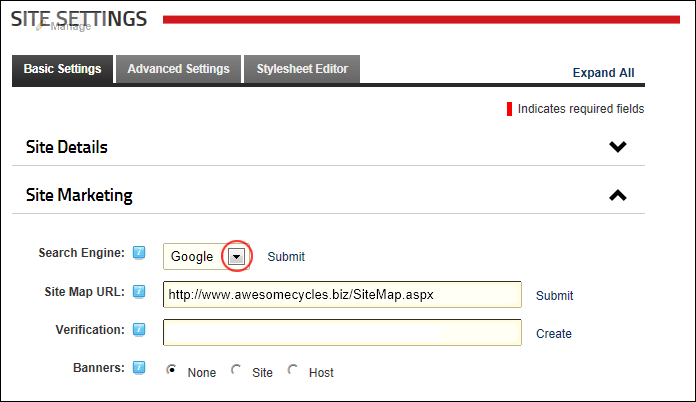

Submitting your Site to Search Engines
How to submit the site to one or more search engines for indexing. This will add the site to the search engine's list of sites to be indexed.
Prerequisites. Site name, description and keywords must been completed. See "Configuring your Site Details"
- Navigate to Admin >
 Site Settings.
Site Settings.
- Optional. Click on the country flag icon associated with the culture (language) to be updated. This field only displays when multiple languages are enabled. See "Viewing a Site in a Secondary Language"
- Select the Basic Settings tab.
- Expand the Site Marketing section.
- At Search Engine, select either the Google, Yahoo or Microsoft search engines.

- Click the Submit link.
- Repeat Steps 5-6 to submit your site to one or both of the other search engines.
Tip: Page Editors and Administrator can also to add a title, description and keywords to each site page. The quality of this information will affect your ranking on search engines, therefore it is recommended that these fields are completed for all pages before submitting the site.